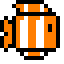
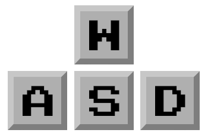

The setup
A peaceful reef is disturbed when strange objects begin appearing in the deep water. The only way to push them back is to work together and keep moving.
Army builder Shoot-em-up
Being better, together. Work with your fish friends to fight pollution and save our seas!.

The Story
Fishing Frenzy follows a crew of brave fish who defend their underwater home from roaming plastics. The deeper the journey goes, the more the team has to rely on timing, coordination, and a little luck.
In the murky, trash-strewn depths of a dying reef, a lonely clownfish named Mr. Fishy wandered through clouds of silt, his vibrant orange scales dulled by the relentless pollution that had driven his kin away. Just as he began to lose hope, he encountered Mrs. Mackerel, a swift and determined survivor who refused to let the toxic waters claim her spirit. Together, they realized that survival against the massive, shadowed predators of the deep required more than just luck; it required a specialized team. As they journeyed through the gloom, they tracked down seven extraordinary fish, each possessing a unique power—from bioluminescent luring to toxic barb defenses—that could turn the tide of their struggle. Every encounter was a high-stakes trial of strength and wit where victory meant gaining a powerful new ally for their growing school, but failure meant a swift and silent end for them all in the cold, unforgiving dark.
A peaceful reef is disturbed when strange objects begin appearing in the deep water. The only way to push them back is to work together and keep moving.
Defeat the trash while building momentum with your team. Every round pushes your group closer to the final showdown.
Fast, cooperative, and easy to jump into. It is designed to feel playful and clear so players can focus on the action!
How to Play
Use the keys below to move your fish, shoot, and switch characters.

The Team
Meet the creators of Fishing Frenzy.
Web Developer
Web Designer
Game Developer
Web Developer
Game Developer
Game Developer